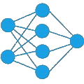

Funktionsweise
Grundsätzlich ist jede KI gleich aufgebaut:- Ein Neurales Netzwerk, das als Gehirn fungiert.
- Eine Möglichkeit, um zu messen wie gut das Netzwerk ist.
- Eine Funktion, um änderungen an dem Netzwerk vorzunehemen
Was ist ein Neurales Netzwerk?
Ein neurales Netzwerk besteht aus einzelnen Punkten, auch Neuronen gennant, die Werte verändern und an andere Neuronen weitergeben oder als endgültigen Wert ausgeben.Jedes (nützliche) Netzwerk besteht aus mindestens drei Verschidenen Spalten, die aus folgenden Neuronen zusammengestezt sind:
- Mindestens zwei Eingabeneuronen, die Werte einlesen können (z.B. einen Text als Befehl).
- Versteckte Neuronen, die die Werte laut ihrer Werte abändern.
Diese Neuronen werden "versteckt" gennant, da man die Änderungen nie direkt sehen kann. - Mindestens 1 Ausgabeneuron, in dem nur der Endwert ausgegeben wird.
Beispiel für eine Visualisierung eines Netzes:

Training und Entwicklung
Die beiden letzten Punkte sind eng miteinander verbunden, deshalb werde ich sie hier zusammen erklären. Es gibt verschiedene Möglichkeiten, eine Künstliche Intelligenz zu trainieren, ich werde hier jedoch nur auf zwei sehr bekannte eingehen.
Lernen durch Nachempfinden
Bei dieser Methode bekommt die künstliche Intelligenz Daten, wie ein Mensch ähnliche Situationen löst.Daraus lernt die KI dann, wie sie selbst mit diesen Aufgaben umgehen muss.
Dieses System hat jedoch ein Problem; die KI kann nie besser als der Mensch werden, von dem sie lernt.
Deshalb wird die Methode häufig nicht komplett zum lernen genutzt, sondern nur um einen schnelleren Start zu ermöglichen.
Lernen durch Evolution
Hierbei werden shr viele Versionen desselben Netztes mit leichten zufälligen Variationen erzeugt.
Nachdem alle Versionen das Testszenario einmal durchlaufen haben, wird ausgewertet, welche Version am besten war.
Diese kommt in die nächste Runde und der Kreislauf beginnt von vorne.
Dadurch wird die KI mit jeder Generation besse, da alle schlechten Varianten aussortert werden.
Allerdings braucht man eine sehr genaue Bewertungsmethode, da sich meistens nicht so viel von Generation zu Generation ändert.
Abschluss
Ich hoffe ich konnte die komplexe Welt er künstlichen Intelligenz halbwegs gut erklären,
um einige Beispiele zu sehen kann ich den Abschnitt Anwendungen empfehlen.